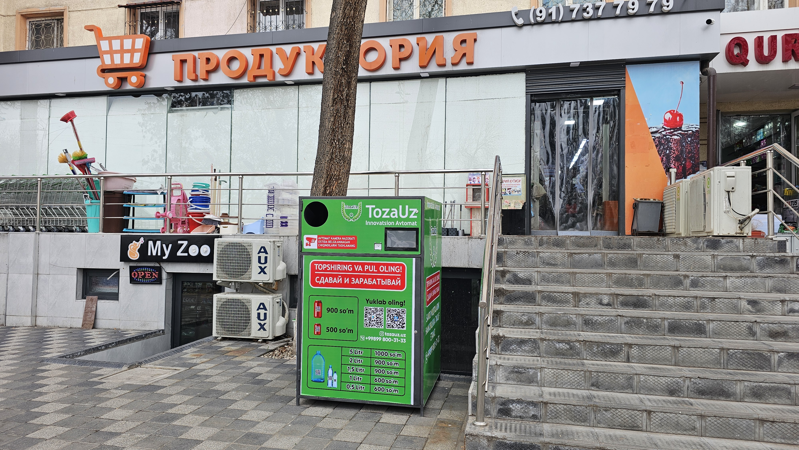

1. TozaUz предлагает мобильный цифровой автомат для сбора вторичных отходов магазинам и супермаркетам!

2. Как бы вы хотели, чтобы это было?
Такой?

Или это так?

"TOZA-GROUP" предлагает стационарную цифровую машину для сбора мусора в микрорайоны, многоквартирные дома и супермаркеты! Предназначен для микрорайонов и многоквартирных домов, работает через приложение "TozaUz". В то время, когда весь мир ищет пути сортировки мусора, команда ТозаУз работает через национальную программу "tozaUz", которая может четко показать, в каком пакете, кем и в какое время и сколько денег ему за это будет передано. сортировать мусор, а обучение населения вопросам сортировки мусора полностью меняет его отношение и интерес.
3. "TOZA-GROUP" предлагает контейнеры объемом 1 кубический метр для бытовых отходов юридическим лицам и физическим лицам.!
Команда "TOZA-GROUP" изобрела систему с QR-кодом для контейнеров объемом 1 кубический метр, которая позволяет оформлять заказ только при сборе отходов. И что самое главное — революционное новшество: чем больше отходов вы выводите, тем меньше платите. Все процессы, включая заказ, доставку контейнера, его наполнение отходами и их вывоз, можно контролировать через полностью цифровую систему с помощью Telegram-бота "TozaUz". Обратите внимание, что "TOZA-GROUP" работает в том формате, который вам наиболее удобен.

4. "TOZA-GROUP" предлагает контейнеры объемом 15-20 кубических метров для бытовых и строительных отходов юридическим лицам и физическим лицам!